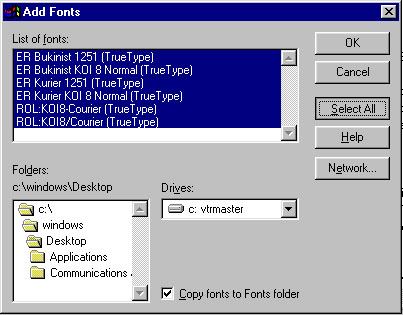

Page index / PC-MacRussian
Step Four
Step Four
Be sure that in the "Folders:" window you have selected the "c:\windows\Desktop". Then click on 'Select All' before clicking 'OK'.

You are now set with the Russian fonts used for browsing the Russian web pages.
Now all that is left is the configuation of your web browser. Select one of the browsers below.
Configurations of Netscape Navigator 3 || Configurations of Internet Explorer 3